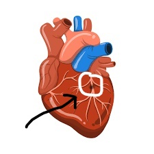

PLAGUE
THAT ARE FORMED THAT
BLOCKS
THE TRANSFER OF HEART
IN THE
ARTERY

CORONARY CHECK
Contact MeCoronary heart disease (CHD):
is a condition that occurs when the coronary arteries,
which supply blood to the heart muscle, become narrowed or blocked due to a buildup of plaque (a mixture of fat, cholesterol, and other substances). This narrowing can reduce blood flow to the heart, leading to various problems
including:
Angina:
Pain or discomfort that occurs when the heart doesn't get enough blood.
Heart Attack:
A complete blockage of blood flow to a part of the heart muscle, causing damage or death to that tissue.
Arrhythmias:
Irregular heartbeats that can result from disrupted blood flow.
Heart Failure:
A condition where the heart cannot pump effectively, often resulting from chronic CHD.
Risk factors for CHD:
Include high blood pressure, high cholesterol, smoking, diabetes, obesity, lack of physical activity, and a family history of heart disease. Preventative measures focus on lifestyle changes, medication, and sometimes surgical interventions to restore blood flow.
PLAGUE
THAT ARE FORMED THAT
BLOCKS
THE TRANSFER OF HEART
IN THE
ARTERY
IMAGE OF HOW PLAGUE LEADS TO CAUSE HEART ATTACK :-
© [2024][Coronary Heart Disease prediction].All Rights Reserved
This project leverages advanced AI technologies, including Convolutional Neural Networks (CNN) and Recurrent Neural Networks (RNN), to predict plaque buildup in heart arteries, aiming to enhance cardiovascular health diagnostics.